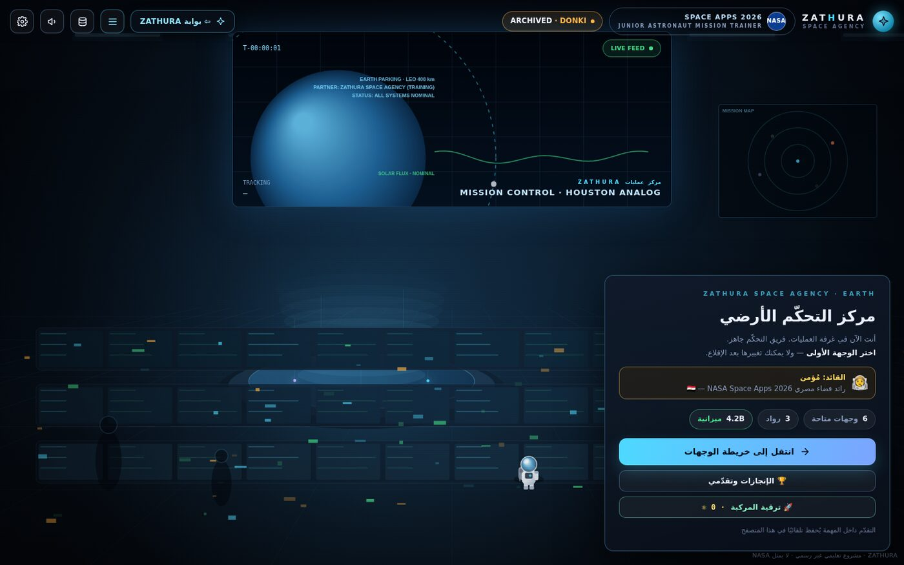

MODE 01 · المحاكي الاستراتيجي
ZATHURA OUTPOST
قُد القاعدة. خلّي الطاقم بيتنفّس.
كل صباح توزّع ١٥ وحدة طاقة، تحفر الثلج، وتزرع أكلك بنفسك — وكل قرار بيرجع لك بعدين.
- 🧠 ٣٦ موقفًا حرجًا — مفيش حل واحد صح
- ⚙️ ٥ أنظمة تتزاحم على ميزانية طاقة واحدة
- 🎒 خروج EVA بتكلفة ساعات وجرعة حقيقية
- 🌱 دفيئة من البذرة لحد الحصاد
عربي ١٠٠٪
بلا إنترنت
قاعدة + EVA
▶ العب الوضع ١